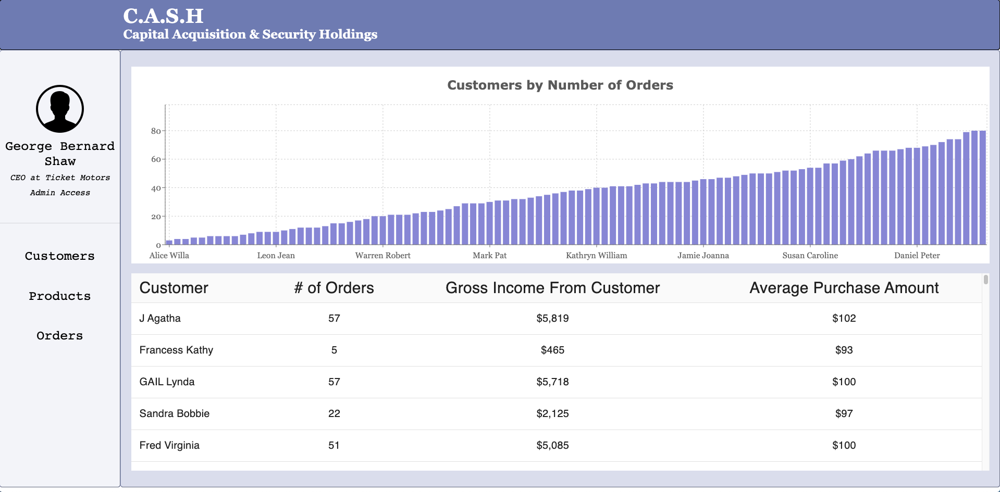
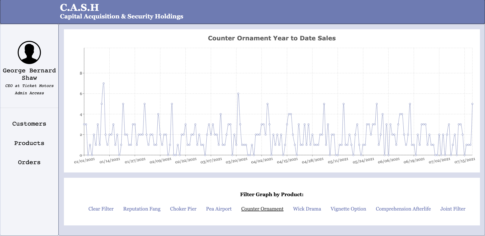

Welcome back, folks
This post is meant to showcase a project that I recently wrapped up - A business analytics tool meant to display and glean insights from fictitious sales-reports generated in python. If you want to check out the README for the project, you can find it here. If you’d like to look at the demo for the site, you can check it out here.
The project boils down to three main components:
- A python script which reads in data from two text files, takes a few parameters from the user, and spits out a JSON file containing a factitious company, CEO, customers, products, and one year worth of time-stamped product orders by each customer.
- A JSON-server instance which reads in the JSON file created by the Python script and mimics a backend server.
- A React App which calls the backend JSON-server and displays the data in insightful ways, containing statistics about specific product sales trends, customer order history, gross income, and other insights.
This project was meant to be an exercise in creating a tool. While all the data being produced might be fake, it isn’t hard to imagine plugging in some real data and gaining some new perspective. Some family members of mine run a small business and regularly receive sales-reports from distributers, all too often those sales-reports might pile up and gather dust because the energy required to set up the infrastructure to process and display the data is too great compared to all the other urgent tasks that constantly need attention when running a small business.
Those dusty sales reports were my inspiration for this project - and I learned a ton.
The Development Process
Site Design
When I sought out to create this project, I immediately went to google to look for inspiration. My idea was to create something simple, sleek, and useful. I’ve been experimenting a lot with Material-UI as a front-end design library because most of their stuff is free, good-looking, and with a little bit of head-banging, customizable.
Looking through the Material-UI library, I stumbled upon their Dashboard Template. I was a big fan and decided that one of my goals would be to successfully clone this layout. I skipped the download and decided to make my own design and try to match it closely to that template. The main aspects of the template I wanted to emulate was having a sidebar with links and a main console area that contains child components, one being a table containing data, and the other being a graph displaying that data. With this goal in mind, I set out.
The layout was surprisingly easy to get working. It’s kind of reassuring to find out that after so long of failing to product CSS that I’m happy with, things are starting to work out how I imagine them. The first major roadblock I ran into came up after I managed to get my layout just how I wanted. I was ready to start adding a table to hold the data when I remembered - Ah yes, I have no data…
Generating fake Data
I studied science in college.
You do not make up data in science.
If you make up data in science, bad things can happen. A lesson that was beat into my mind in a dozen different classes by a dozen different teachers.
I think this is the reason I enjoy making fake data so much. That and the fact that it’s often a great source of amusement.
For this project I needed to generate a JSON file that contained four main types of data:
- A list of customers containing their name and each order placed by that customer
- A list of products containing the name of the product, its cost and the number of units sold
- A list of dates organized by month that contain each product sold on each given date of the year
- An object containing the name of the company as well as any extra information about the user to be displayed as a “Profile section”
The final format for the JSON file structure that I settled on looked like so:
{
"customers": {
"0": {
"customerName" : "Example Name",
"orders": [
{
"orderDate": "01/24/2021",
"productPurchased": {
"productName": "Example Product",
"productCost": 166,
"numberSold": 427
}
},
{...},
{...}
]
},
"1"{...},
"2"{...},
"3"{...},
...
},
"products": [
{
"productName": "Example Product 1",
"productCost": 150,
"numberSold": 456
},
{...},
{...},
{...}
],
"dates": {
"01_2021": {
"01/01/21": [
"Product 1",
"Product 2",
"Product 3"
],
"01/02/21": [...],
...
}
},
"company":{
"name": "DeLange Development",
"CEO": "Trace DeLange",
"title": "Master Engineer",
"bio": "Engineering Solutions for Made-up Problems"
}
}That’s a lot of JSON, but once I decided what I wanted the data to look like, it was easy to set up some Python functions to generate random products, customers, order dates and company name.
Most of the data is being pulled from two text files that I repurposed from an old project. In the original project, I took a massive list of book titles from the BookCrossing Dataset and split them into titles and authors. I then wrote some code to generate a phony book title based on (Markov Chains to make them sound convincing) and appended a random authors name from the list of two-hundred thousand author names. Finally, once this random book title was generated, I’d tweet it out on a schedule using a bot. This was one of my first software projects and it was ambitious for me at the time. I’m glad that I was able to refer to it and get some use out of some heavy lifting I did two years ago. The final product was underwhelming, and a lot of the titles generated were nonsense, but some were funny. I might revisit and revamp the project eventually.
Anyways, with my list of nouns and authors in hand, it was a simple process of creating an object and populating it with my desired number of customers, products, and orders. After the object was created, I could simply export it as a JSON file, and the JSON-server could take it from there.
Graphing
Now that I had data and a table, all that was left for the most part was to graph it. One of the lessons that we have been getting taught throughout my program, and in the development world in general, is that you shouldn’t waste your time reinventing the wheel. If I need graphs, it’s probably a better use of my time researching graphing libraries and reading some quick getting started docs than it is trying to build a graphing library from scratch. I took heed of this lesson when it came to this problem and quickly discovered the library Recharts. I was very impressed with the ease of access and implementation associated with this library. Not only is it easy to plug your data in, but the component-based utility of the graphs makes it super easy to add, remove and customize each element of the graph. This library will be my first pic when graphing data in the future, especially considering I only scratched the surface for this project.
So how does it Look?
After getting the data imported into tables and the graphs working appropriately, I decided to do some editing to the styling and came up with these final layouts for the project.
The console was split into four main sections: The profile page, the customer console, the product console, and the order console.
The profile page featured the current user and a form which allows for customization of the name of the user, their title, the title of the company, and the company slogan or bio:
When the edit-profile form is submitted, it sends a post to the json-server that persists the changes to the next session.
The customer console really came together well, the main display features a bar graph containing each customer plotted against how many orders they’ve placed. All the customers are being displayed on the bottom with some additional information in tabular form:

Clicking on a customer in the table or on the graph brings up details about that customer and a specific graph featuring the sales history of the customer.

Always good to know who your friends are!
The orders console displays each day of the year and the number of orders placed on each day:

At the bottom of the page, you can select a product to filter by:

I was happy with how the graphs fit into the website. I was able to customize the color of the lines to match the theme and if there was anything else that needed to be customized, I’m sure it could have been done.
What’s next
I think that it would be exciting to continue building upon this project and getting it to a point where a real business might be able to utilize it for their gain, or even a point where I might be able to sell the product of an analytics console to a business, but this is more of a proof of concept and an exercise in design than anything marketable. If I were to continue this idea, I’d start working on a backend system to authorize specific users from specific organization and create a login system. That is something I am not ready at this point to take on; however, it is something that I am looking to experiment with soon. Other interesting avenues to explore would be to analyze the specific purchase history of each customer and try to predict what their next purchase will be. Considering all this data is random, there wouldn’t be a lot to do with analytics on this level - If I were to plug some real data in though, it would be exciting to see what kind of market insights could be gained.
As of now, I think I am going to let this project rest for some time. I’m starting to see sales-data in my dreams and there are some other topics that I’d like to explore.
As always, thank you very much for taking the time to read. If you want to check this project out on GitHub, you can find the repo here and if you want to check out the live demo, you can find it here
If you have any comments, questions or just want to chat, you can reach me at tracedelange@me.com
Thanks for reading! Trace